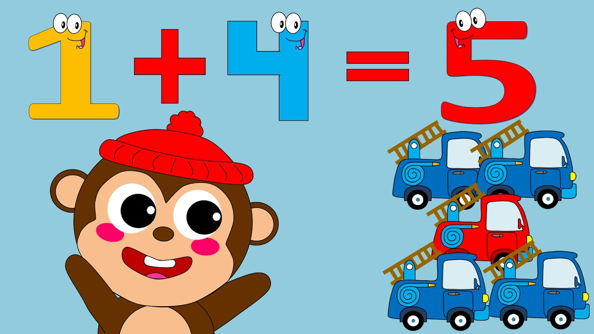

La adición o suma es la operación matemática de composición que consiste en combinar o añadir dos números o más para obtener una cantidad final o total. La suma también ilustra el proceso de juntar dos colecciones de objetos con el fin de obtener una sola colección
Cuándo se aprende a sumar y restar? Aprender a sumar y restar empieza con aprender a contar . Algunos niños aprenden a contar en la guardería o en el preescolar, pero no significa que sepan sumar o restar. Conozca cómo suele ser el proceso de aprender a sumar y restar: En kínder: Los niños cuentan hacia adelante y hacia atrás, empezando y terminando con el cero. También empiezan a unir números de un dígito y comparar cantidades para ver la diferencia.